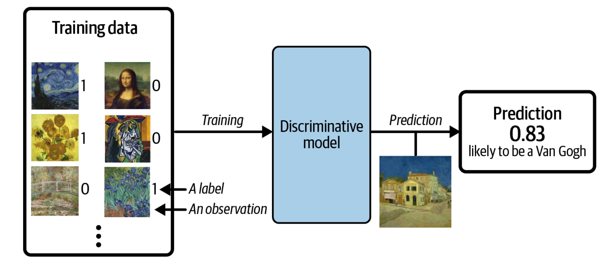

Week 34: Introduction to the course, Logistics and Practicalities#
Morten Hjorth-Jensen, Department of Physics and Center for Computing in Science Education, University of Oslo, Norway
Date: Week 34, August 18-22, 2025
Overview of first week#
The sessions on Tuesdays and Wednesdays last four hours for each group (four groups in total) and will include lectures in a flipped mode (promoting active learning) and work on exercices and projects.
The sessions will begin with lectures, discussions, questions and answers about the material to be covered every week. Videos and teaching material will be announced in due time.
There are four groups:
Tuesdays 815am-12pm and 1215pm-4pm
Wednesdays 815am-12pm and 1215pm-4pm.
On Mondays we have a regular lecture which will be organized as a mix of active learning sessions and regular lectures. These lectures/active learning sessions start at 215pm and end at 4pm and serve the aims of giving an overview over various topics as well as solving specific problems. These lectures will also be recorded. Lectures can be attended in person or via zoom at https://uio.zoom.us/my/mortenhj
Videos and learning material with reading suggestions will be made available before each week starts.
Schedule first week#
August 18: Lecture: Presentation of course, Linear regression, examples and theory
August 19: Introduction to software and repetition of Python Programming, linear algebra and basic elements of statistics. Please select group.
August 20: Introduction to software and repetition of Python Programming, linear algebra and basic elements of statistics. Please select group.
Lectures and ComputerLab#
Mondays: regular lectures/active learning sessions (2.15pm-4pm)
The sessions on Tuesdays and Wednesdays last four hours and will include partly lectures and discussions in the beginning.
Weekly reading assignments and videos needed to solve projects and exercises.
Weekly exercises. You can hand in exercises if you want and get an extra score, see below.
Detailed lecture notes, exercises, all programs presented, projects etc can be found at the homepage of the course.
Weekly plans and all other information are on the official website. This info will also be conveyed via weekly emails.
No final exam, three projects that are graded and have to be approved.
Communication channels#
Communications (email and more) via <canvas.uio.no>
Course Format#
Three compulsory projects. Electronic reports only using Canvas to hand in projects and git as version control software and GitHub for repository (or GitLab) of all your material.
Evaluation and grading: The three projects are graded and each counts 1/3 of the final mark. No final written or oral exam.
a. For the last project each group/participant submits a proposal or works with suggested (by us) proposals for the project.
b. If possible, we would like to organize the last project as a workshop where each group presents this to all other participants of the course
c. Based on feedback etc, each group finalizes the report and submits for grading.
Python is the default programming language, but feel free to use C/C++, Julia and/or Fortran or other programming languages. All source codes discussed during the lectures can be found at the webpage and github address of the course.
Teachers#
Morten Hjorth-Jensen, morten.hjorth-jensen@fys.uio.no
Phone: +47-48257387
Office: Department of Physics, University of Oslo, Eastern wing, room FØ470
Office hours: Anytime! Individual or group office hours can be arranged either in person or via zoom. Feel free to send an email for planning.
Ida Torkjellsdatter Storehaug, i.t.storehaug@fys.uio.no
Oskar Leinonen, oskarlei@fys.uio.no
Mia-Katrin Ose Kvalsund, m.k.o.kvalsund@fys.uio.no
Karl Henrik Fredly, k.h.fredly@fys.uio.no
Eir Eline Hørlyk, e.e.horlyk@fys.uio.no
Britt S. Haanen, b.s.m.haanen@fys.uio.no
Deadlines for projects (tentative)#
Project 1: October 6 (available September 1) graded with feedback)
Project 2: November 3 (available October 6, graded with feedback)
Project 3: December 8 (available November 3, graded with feedback)
Extra Credit (not mandatory), weekly exercise assignments, 10 in total (due Friday same week), 10% additional score. The extra credit assignments are due each Friday and can be uploaed to Canvas in your preferred format (although we prefer jupyter-notebooks). First assignment is for week 35. Each weekly exercise set gives one additional point to the final score, see below on grading.
Grading#
Grades are awarded on a scale from A to F, where A is the best grade and F is a fail. There are three projects which are graded and each project counts 1/3 of the final grade. The total score is thus the average from all three projects.
The final number of points is based on the average of all projects and the grade follows the following table:
92-100 points: A
77-91 points: B
58-76 points: C
46-57 points: D
40-45 points: E
0-39 points: F-failed
In addition you can get an extra score for weekly assignments (10 in total and due each Friday). Each weekly assignment counts 1 point. As an example, this means that if your average after three projects is 88 points and you have handed in and gotten approved four weekly exercises, the total score is 88+4=92, which translates into an A.
Reading material#
The lecture notes are collected as a jupyter-book at https://compphysics.github.io/MachineLearning/doc/LectureNotes/_build/html/intro.html.
In addition to the lecture notes, we recommend the books of Rasckha et al and Goodfellow et al. We will follow these texts closely and the weekly reading assignments refer to these texts. The text by Hastie et al is also widely used in the Machine Learning community. See next slide for link to textbooks.
Main textbooks#
Goodfellow, Bengio, and Courville (GBC), Deep Learning https://www.deeplearningbook.org/
Sebastian Raschka, Yuxi Lie, and Vahid Mirjalili (RLM), Machine Learning with PyTorch and Scikit-Learn at https://www.packtpub.com/product/machine-learning-with-pytorch-and-scikit-learn/9781801819312, see also https://sebastianraschka.com/blog/2022/ml-pytorch-book.html
The weekly reading suggestions are all from these two texts. The text by GBC can be accessed chapter by chapter from the abovementioned URL. Each chapter of RLM gives access to the pertinent notebooks. These notebooks are highly recommended.
Other popular texts#
Other texts.
Christopher M. Bishop (CB), Pattern Recognition and Machine Learning
Hastie, Tibshirani, and Friedman (HTF), The Elements of Statistical Learning, Springer.
Aurelien Geron (AG), Hands‑On Machine Learning with Scikit‑Learn and TensorFlow, O’Reilly. This text is very useful since it contains many code examples and hands-on applications of all algorithms discussed in this course.
Kevin Murphy (KM), Probabilistic Machine Learning, an Introduction
David Foster (DF), Generative Deep Learning, https://www.oreilly.com/library/view/generative-deep-learning/9781098134174/
Babcock and Gavras (BG), Generative AI with Python and TensorFlow, PacktPublishing/Hands-On-Generative-AI-with-Python-and-TensorFlow-2
Reading suggestions week 34#
This week: Refresh linear algebra, GBC chapter 2. Install scikit-learn. See lecture notes for week 34 at https://compphysics.github.io/MachineLearning/doc/web/course.html (these notes).
Prerequisites#
Basic knowledge in programming and mathematics, with an emphasis on linear algebra. Knowledge of Python or/and C++ as programming languages is strongly recommended and experience with Jupiter notebook is recommended. Required courses are the equivalents to the University of Oslo mathematics courses MAT1100, MAT1110, MAT1120 and at least one of the corresponding computing and programming courses INF1000/INF1110 or MAT-INF1100/MAT-INF1100L/BIOS1100/KJM-INF1100. Most universities offer nowadays a basic programming course (often compulsory) where Python is the recurring programming language.
Topics covered in this course: Statistical analysis and optimization of data#
The course has two central parts
Statistical analysis and optimization of data
Machine learning
These topics will be scattered thorughout the course and may not necessarily be taught separately. Rather, we will often take an approach (during the lectures and project/exercise sessions) where say elements from statistical data analysis are mixed with specific Machine Learning algorithms.
Statistical analysis and optimization of data#
We plan to cover the following topics:
Basic concepts, expectation values, variance, covariance, correlation functions and errors;
Simpler models, binomial distribution, the Poisson distribution, simple and multivariate normal distributions;
Central elements of Bayesian statistics and modeling;
Gradient methods for data optimization;
Monte Carlo methods, Markov chains, Gibbs sampling and Metropolis-Hastings sampling (tentative);
Estimation of errors and resampling techniques such as the cross-validation, blocking, bootstrapping and jackknife methods;
Principal Component Analysis (PCA) and its mathematical foundation;
Machine Learning#
Pre deep-learning revolution (2008 approx)
Linear Regression and Logistic Regression, classification and regression problems;
Bayesian linear and logistic regression, kernel regression;
Decisions trees, Random Forests, Bagging and Boosting methods;
Support vector machines (only survey);
Unsupervised learning and dimensionality reduction, from PCA to clustering;
Deep learning methods#
Deep learning
Neural networks and deep learning;
Convolutional neural networks;
Recurrent neural networks;
Autoencoders
Generative methods with an emphasis on Boltzmann Machines, Variational Autoencoders and Generalized Adversarial Networks(covered by FYS5429);
Hands-on demonstrations, exercises and projects aim at deepening your understanding of these topics.
Extremely useful tools, strongly recommended#
and discussed at the lab sessions.
GIT for version control, and GitHub or GitLab as repositories, highly recommended. This will be discussed during the first exercise session
Anaconda and other Python environments, see intro slides and links to programming resources at https://computationalscienceuio.github.io/RefreshProgrammingSkills/intro.html
Other courses on Data science and Machine Learning at UiO#
STK2100 Machine learning and statistical methods for prediction and classification.
IN3050/4050 Introduction to Artificial Intelligence and Machine Learning. Introductory course in machine learning and AI with an algorithmic approach.
STK-INF3000/4000 Selected Topics in Data Science. The course provides insight into selected contemporary relevant topics within Data Science.
IN4080 Natural Language Processing. Probabilistic and machine learning techniques applied to natural language processing.
Other courses on Data science and Machine Learning at UiO, contn#
STK-IN4300 Statistical learning methods in Data Science. An advanced introduction to statistical and machine learning. For students with a good mathematics and statistics background.
Learning outcomes#
Learn about basic data analysis, statistical analysis, Bayesian statistics, Monte Carlo sampling, data optimization and machine learning;
Be capable of extending the acquired knowledge to other systems and cases;
Have an understanding of central algorithms used in data analysis and machine learning;
Understand linear methods for regression and classification, from ordinary least squares, via Lasso and Ridge to Logistic regression;
Learn about neural networks and deep learning methods for supervised and unsupervised learning. Emphasis on feed forward neural networks, convolutional and recurrent neural networks;
Learn about about decision trees, random forests, bagging and boosting methods;
Learn about support vector machines and kernel transformations;
Reduction of data sets, from PCA to clustering;
Generative models
Work on numerical projects to illustrate the theory. The projects play a central role and you are expected to know modern programming languages like Python or C++ and/or Fortran (Fortran2003 or later) or Julia or other.
Types of Machine Learning#
The approaches to machine learning are many, but are often split into two main categories. In supervised learning we know the answer to a problem, and let the computer deduce the logic behind it. On the other hand, unsupervised learning is a method for finding patterns and relationship in data sets without any prior knowledge of the system. Some authours also operate with a third category, namely reinforcement learning. This is a paradigm of learning inspired by behavioral psychology, where learning is achieved by trial-and-error, solely from rewards and punishment.
Another way to categorize machine learning tasks is to consider the desired output of a system. Some of the most common tasks are:
Classification: Outputs are divided into two or more classes. The goal is to produce a model that assigns inputs into one of these classes. An example is to identify digits based on pictures of hand-written ones. Classification is typically supervised learning.
Regression: Finding a functional relationship between an input data set and a reference data set. The goal is to construct a function that maps input data to continuous output values.
Clustering: Data are divided into groups with certain common traits, without knowing the different groups beforehand. It is thus a form of unsupervised learning.
Essential elements of ML#
The methods we cover have three main topics in common, irrespective of whether we deal with supervised or unsupervised learning.
The first ingredient is normally our data set (which can be subdivided into training, validation and test data). Many find the most difficult part of using Machine Learning to be the set up of your data in a meaningful way.
The second item is a model which is normally a function of some parameters. The model reflects our knowledge of the system (or lack thereof). As an example, if we know that our data show a behavior similar to what would be predicted by a polynomial, fitting our data to a polynomial of some degree would then determin our model.
The last ingredient is a so-called cost/loss function (or error or risk function) which allows us to present an estimate on how good our model is in reproducing the data it is supposed to train.
An optimization/minimization problem#
At the heart of basically all Machine Learning algorithms we will encounter so-called minimization or optimization algorithms. A large family of such methods are so-called gradient methods.
The plethora of machine learning algorithms/methods#
Deep learning: Neural Networks (NNs), Convolutional NNs, Recurrent NNs, Transformers, Boltzmann machines, autoencoders and variational autoencoders and generative adversarial networks and other generative models
Bayesian statistics and Bayesian Machine Learning, Bayesian experimental design, Bayesian Regression models, Bayesian neural networks, Gaussian processes and much more
Dimensionality reduction (Principal component analysis), Clustering Methods and more
Ensemble Methods, Random forests, bagging and voting methods, gradient boosting approaches
Linear and logistic regression, Kernel methods, support vector machines and more
Reinforcement Learning; Transfer Learning and more
What Is Generative Modeling?#
Generative modeling can be broadly defined as follows:
Generative modeling is a branch of machine learning that involves training a model to produce new data that is similar to a given dataset.
What does this mean in practice? Suppose we have a dataset containing photos of horses. We can train a generative model on this dataset to capture the rules that govern the complex relationships between pixels in images of horses. Then we can sample from this model to create novel, realistic images of horses that did not exist in the original dataset.
Example of generative modeling, taken from Generative Deep Learning by David Foster#

Figure 1:
Generative Versus Discriminative Modeling#
In order to truly understand what generative modeling aims to achieve and why this is important, it is useful to compare it to its counterpart, discriminative modeling. If you have studied machine learning, most problems you will have faced will have most likely been discriminative in nature.
Example of discriminative modeling, taken from Generative Deep Learning by David Foster#

Figure 1:
Discriminative Modeling#
When performing discriminative modeling, each observation in the training data has a label. For a binary classification problem such as our data could be labeled as ones and zeros. Our model then learns how to discriminate between these two groups and outputs the probability that a new observation has label 1 or 0
In contrast, generative modeling doesn’t require the dataset to be labeled because it concerns itself with generating entirely new data (for example an image), rather than trying to predict a label for say a given image.
A Frequentist approach to data analysis#
When you hear phrases like predictions and estimations and correlations and causations, what do you think of? May be you think of the difference between classifying new data points and generating new data points. Or perhaps you consider that correlations represent some kind of symmetric statements like if \(A\) is correlated with \(B\), then \(B\) is correlated with \(A\). Causation on the other hand is directional, that is if \(A\) causes \(B\), \(B\) does not necessarily cause \(A\).
These concepts are in some sense the difference between machine learning and statistics. In machine learning and prediction based tasks, we are often interested in developing algorithms that are capable of learning patterns from given data in an automated fashion, and then using these learned patterns to make predictions or assessments of newly given data. In many cases, our primary concern is the quality of the predictions or assessments, and we are less concerned about the underlying patterns that were learned in order to make these predictions.
In machine learning we normally use a so-called frequentist approach, where the aim is to make predictions and find correlations. We focus less on for example extracting a probability distribution function (PDF). The PDF can be used in turn to make estimations and find causations such as given \(A\) what is the likelihood of finding \(B\).
What is a good model?#
In science and engineering we often end up in situations where we want to infer (or learn) a quantitative model \(M\) for a given set of sample points \(\boldsymbol{X} \in [x_1, x_2,\dots x_N]\).
As we will see repeatedely in these lectures, we could try to fit these data points to a model given by a straight line, or if we wish to be more sophisticated to a more complex function.
The reason for inferring such a model is that it serves many useful purposes. On the one hand, the model can reveal information encoded in the data or underlying mechanisms from which the data were generated. For instance, we could discover important corelations that relate interesting physics interpretations.
In addition, it can simplify the representation of the given data set and help us in making predictions about future data samples.
A first important consideration to keep in mind is that inferring the correct model for a given data set is an elusive, if not impossible, task. The fundamental difficulty is that if we are not specific about what we mean by a correct model, there could easily be many different models that fit the given data set equally well.
What is a good model? Can we define it?#
The central question is this: what leads us to say that a model is correct or optimal for a given data set? To make the model inference problem well posed, i.e., to guarantee that there is a unique optimal model for the given data, we need to impose additional assumptions or restrictions on the class of models considered. To this end, we should not be looking for just any model that can describe the data. Instead, we should look for a model \(M\) that is the best among a restricted class of models. In addition, to make the model inference problem computationally tractable, we need to specify how restricted the class of models needs to be. A common strategy is to start with the simplest possible class of models that is just necessary to describe the data or solve the problem at hand. More precisely, the model class should be rich enough to contain at least one model that can fit the data to a desired accuracy and yet be restricted enough that it is relatively simple to find the best model for the given data.
Thus, the most popular strategy is to start from the simplest class of models and increase the complexity of the models only when the simpler models become inadequate. For instance, if we work with a regression problem to fit a set of sample points, one may first try the simplest class of models, namely linear models, followed obviously by more complex models.
How to evaluate which model fits best the data is something we will come back to over and over again in these sets of lectures.
Software and needed installations#
We will make extensive use of Python as programming language and its myriad of available libraries. You will find Jupyter notebooks invaluable in your work. You can run R codes in the Jupyter/IPython notebooks, with the immediate benefit of visualizing your data. You can also use compiled languages like C++, Rust, Julia, Fortran etc if you prefer. The focus in these lectures will be on Python.
If you have Python installed (we strongly recommend Python3) and you feel pretty familiar with installing different packages, we recommend that you install the following Python packages via pip as
pip install numpy scipy matplotlib ipython scikit-learn mglearn sympy pandas pillow
For Python3, replace pip with pip3.
For OSX users we recommend, after having installed Xcode, to install brew. Brew allows for a seamless installation of additional software via for example
brew install python3
For Linux users, with its variety of distributions like for example the widely popular Ubuntu distribution, you can use pip as well and simply install Python as
sudo apt-get install python3 (or python for pyhton2.7)
etc etc.
Python installers#
If you don’t want to perform these operations separately and venture into the hassle of exploring how to set up dependencies and paths, we recommend two widely used distrubutions which set up all relevant dependencies for Python, namely
which is an open source distribution of the Python and R programming languages for large-scale data processing, predictive analytics, and scientific computing, that aims to simplify package management and deployment. Package versions are managed by the package management system conda.
is a Python distribution for scientific and analytic computing distribution and analysis environment, available for free and under a commercial license.
Furthermore, Google’s Colab is a free Jupyter notebook environment that requires no setup and runs entirely in the cloud. Try it out!
Useful Python libraries#
Here we list several useful Python libraries we strongly recommend (if you use anaconda many of these are already there)
NumPy is a highly popular library for large, multi-dimensional arrays and matrices, along with a large collection of high-level mathematical functions to operate on these arrays
The pandas library provides high-performance, easy-to-use data structures and data analysis tools
Xarray is a Python package that makes working with labelled multi-dimensional arrays simple, efficient, and fun!
Scipy (pronounced “Sigh Pie”) is a Python-based ecosystem of open-source software for mathematics, science, and engineering.
Matplotlib is a Python 2D plotting library which produces publication quality figures in a variety of hardcopy formats and interactive environments across platforms.
Autograd can automatically differentiate native Python and Numpy code. It can handle a large subset of Python’s features, including loops, ifs, recursion and closures, and it can even take derivatives of derivatives of derivatives
JAX has now more or less replaced Autograd. JAX is Autograd and XLA, brought together for high-performance numerical computing and machine learning research. It provides composable transformations of Python+NumPy programs: differentiate, vectorize, parallelize, Just-In-Time compile to GPU/TPU, and more.
SymPy is a Python library for symbolic mathematics.
scikit-learn has simple and efficient tools for machine learning, data mining and data analysis
TensorFlow is a Python library for fast numerical computing created and released by Google
Keras is a high-level neural networks API, written in Python and capable of running on top of TensorFlow, CNTK, or Theano
Pytorch, highly recommened
Theano and many other
Installing R, C++, cython or Julia#
You will also find it convenient to utilize R. We will mainly use Python during our lectures and in various projects and exercises. Those of you already familiar with R should feel free to continue using R, keeping however an eye on the parallel Python set ups. Similarly, if you are a Python afecionado, feel free to explore R as well. Jupyter(Julia, Python and R) /Ipython notebook allows you to run R codes and Julia codes interactively in your browser. The software library R is really tailored for statistical data analysis and allows for an easy usage of the tools and algorithms we will discuss in these lectures.
To install R with Jupyter notebook follow the link here
Installing R, C++, cython, Numba etc#
For the C++ aficionados, Jupyter/IPython notebook allows you also to install C++ and run codes written in this language interactively in the browser. Since we will emphasize writing many of the algorithms yourself, you can thus opt for either Python or C++ (or Fortran or other compiled languages) as programming languages.
To add more entropy, cython can also be used when running your notebooks. It means that Python with the jupyter notebook setup allows you to integrate widely popular softwares and tools for scientific computing. Similarly, the Numba Python package delivers increased performance capabilities with minimal rewrites of your codes. With its versatility, including symbolic operations, Python offers a unique computational environment. Your jupyter notebook can easily be converted into a nicely rendered PDF file or a Latex file for further processing. For example, convert to latex as
pycod jupyter nbconvert filename.ipynb --to latex
And to add more versatility, the Python package SymPy is a Python library for symbolic mathematics. It aims to become a full-featured computer algebra system (CAS) and is entirely written in Python.
Finally, we recommend strongly using Autograd or JAX for automatic differentiation.
Numpy examples and Important Matrix and vector handling packages#
There are several central software libraries for linear algebra and eigenvalue problems. Several of the more popular ones have been wrapped into ofter software packages like those from the widely used text Numerical Recipes. The original source codes in many of the available packages are often taken from the widely used software package LAPACK, which follows two other popular packages developed in the 1970s, namely EISPACK and LINPACK. We describe them shortly here.
LINPACK: package for linear equations and least square problems.
LAPACK:package for solving symmetric, unsymmetric and generalized eigenvalue problems. From LAPACK’s website http://www.netlib.org it is possible to download for free all source codes from this library. Both C/C++ and Fortran versions are available.
BLAS (I, II and III): (Basic Linear Algebra Subprograms) are routines that provide standard building blocks for performing basic vector and matrix operations. Blas I is vector operations, II vector-matrix operations and III matrix-matrix operations. Highly parallelized and efficient codes, all available for download from http://www.netlib.org.
Numpy and arrays#
Numpy provides an easy way to handle arrays in Python. The standard way to import this library is as
import numpy as np
Here follows a simple example where we set up an array of ten elements, all determined by random numbers drawn according to the normal distribution,
n = 10
x = np.random.normal(size=n)
print(x)
We defined a vector \(x\) with \(n=10\) elements with its values given by the Normal distribution \(N(0,1)\). Another alternative is to declare a vector as follows
import numpy as np
x = np.array([1, 2, 3])
print(x)
Here we have defined a vector with three elements, with \(x_0=1\), \(x_1=2\) and \(x_2=3\). Note that both Python and C++ start numbering array elements from \(0\) and on. This means that a vector with \(n\) elements has a sequence of entities \(x_0, x_1, x_2, \dots, x_{n-1}\). We could also let (recommended) Numpy to compute the logarithms of a specific array as
import numpy as np
x = np.log(np.array([4, 7, 8]))
print(x)
In the last example we used Numpy’s unary function \(np.log\). This function is highly tuned to compute array elements since the code is vectorized and does not require looping. We normaly recommend that you use the Numpy intrinsic functions instead of the corresponding log function from Python’s math module. The looping is done explicitely by the np.log function. The alternative, and slower way to compute the logarithms of a vector would be to write
import numpy as np
from math import log
x = np.array([4, 7, 8])
for i in range(0, len(x)):
x[i] = log(x[i])
print(x)
We note that our code is much longer already and we need to import the log function from the math module. The attentive reader will also notice that the output is \([1, 1, 2]\). Python interprets automagically our numbers as integers (like the automatic keyword in C++). To change this we could define our array elements to be double precision numbers as
import numpy as np
x = np.log(np.array([4, 7, 8], dtype = np.float64))
print(x)
or simply write them as double precision numbers (Python uses 64 bits as default for floating point type variables), that is
import numpy as np
x = np.log(np.array([4.0, 7.0, 8.0]))
print(x)
To check the number of bytes (remember that one byte contains eight bits for double precision variables), you can use simple use the itemsize functionality (the array \(x\) is actually an object which inherits the functionalities defined in Numpy) as
import numpy as np
x = np.log(np.array([4.0, 7.0, 8.0]))
print(x.itemsize)
Matrices in Python#
Having defined vectors, we are now ready to try out matrices. We can define a \(3 \times 3 \) real matrix \(\boldsymbol{A}\) as (recall that we user lowercase letters for vectors and uppercase letters for matrices)
import numpy as np
A = np.log(np.array([ [4.0, 7.0, 8.0], [3.0, 10.0, 11.0], [4.0, 5.0, 7.0] ]))
print(A)
If we use the shape function we would get \((3, 3)\) as output, that is verifying that our matrix is a \(3\times 3\) matrix. We can slice the matrix and print for example the first column (Python organized matrix elements in a row-major order, see below) as
import numpy as np
A = np.log(np.array([ [4.0, 7.0, 8.0], [3.0, 10.0, 11.0], [4.0, 5.0, 7.0] ]))
# print the first column, row-major order and elements start with 0
print(A[:,0])
We can continue this was by printing out other columns or rows. The example here prints out the second column
import numpy as np
A = np.log(np.array([ [4.0, 7.0, 8.0], [3.0, 10.0, 11.0], [4.0, 5.0, 7.0] ]))
# print the first column, row-major order and elements start with 0
print(A[1,:])
Numpy contains many other functionalities that allow us to slice, subdivide etc etc arrays. We strongly recommend that you look up the Numpy website for more details. Useful functions when defining a matrix are the np.zeros function which declares a matrix of a given dimension and sets all elements to zero
import numpy as np
n = 10
# define a matrix of dimension 10 x 10 and set all elements to zero
A = np.zeros( (n, n) )
print(A)
or initializing all elements to
import numpy as np
n = 10
# define a matrix of dimension 10 x 10 and set all elements to one
A = np.ones( (n, n) )
print(A)
or as unitarily distributed random numbers (see the material on random number generators in the statistics part)
import numpy as np
n = 10
# define a matrix of dimension 10 x 10 and set all elements to random numbers with x \in [0, 1]
A = np.random.rand(n, n)
print(A)
As we will see throughout these lectures, there are several extremely useful functionalities in Numpy. As an example, consider the discussion of the covariance matrix. Suppose we have defined three vectors \(\boldsymbol{x}, \boldsymbol{y}, \boldsymbol{z}\) with \(n\) elements each. The covariance matrix is defined as
where for example
The Numpy function np.cov calculates the covariance elements using the factor \(1/(n-1)\) instead of \(1/n\) since it assumes we do not have the exact mean values. The following simple function uses the np.vstack function which takes each vector of dimension \(1\times n\) and produces a \(3\times n\) matrix \(\boldsymbol{W}\)
which in turn is converted into into the \(3\times 3\) covariance matrix \(\boldsymbol{\Sigma}\) via the Numpy function np.cov(). We note that we can also calculate the mean value of each set of samples \(\boldsymbol{x}\) etc using the Numpy function np.mean(x). We can also extract the eigenvalues of the covariance matrix through the np.linalg.eig() function.
# Importing various packages
import numpy as np
n = 100
x = np.random.normal(size=n)
print(np.mean(x))
y = 4+3*x+np.random.normal(size=n)
print(np.mean(y))
z = x**3+np.random.normal(size=n)
print(np.mean(z))
W = np.vstack((x, y, z))
Sigma = np.cov(W)
print(Sigma)
Eigvals, Eigvecs = np.linalg.eig(Sigma)
print(Eigvals)
%matplotlib inline
import numpy as np
import matplotlib.pyplot as plt
from scipy import sparse
eye = np.eye(4)
print(eye)
sparse_mtx = sparse.csr_matrix(eye)
print(sparse_mtx)
x = np.linspace(-10,10,100)
y = np.sin(x)
plt.plot(x,y,marker='x')
plt.show()
Meet the Pandas#

Figure 1:
Another useful Python package is pandas, which is an open source library providing high-performance, easy-to-use data structures and data analysis tools for Python. pandas stands for panel data, a term borrowed from econometrics and is an efficient library for data analysis with an emphasis on tabular data. pandas has two major classes, the DataFrame class with two-dimensional data objects and tabular data organized in columns and the class Series with a focus on one-dimensional data objects. Both classes allow you to index data easily as we will see in the examples below. pandas allows you also to perform mathematical operations on the data, spanning from simple reshapings of vectors and matrices to statistical operations.
The following simple example shows how we can, in an easy way make tables of our data. Here we define a data set which includes names, place of birth and date of birth, and displays the data in an easy to read way. We will see repeated use of pandas, in particular in connection with classification of data.
import pandas as pd
from IPython.display import display
data = {'First Name': ["Frodo", "Bilbo", "Aragorn II", "Samwise"],
'Last Name': ["Baggins", "Baggins","Elessar","Gamgee"],
'Place of birth': ["Shire", "Shire", "Eriador", "Shire"],
'Date of Birth T.A.': [2968, 2890, 2931, 2980]
}
data_pandas = pd.DataFrame(data)
display(data_pandas)
In the above we have imported pandas with the shorthand pd, the latter has become the standard way we import pandas. We make then a list of various variables and reorganize the aboves lists into a DataFrame and then print out a neat table with specific column labels as Name, place of birth and date of birth. Displaying these results, we see that the indices are given by the default numbers from zero to three. pandas is extremely flexible and we can easily change the above indices by defining a new type of indexing as
data_pandas = pd.DataFrame(data,index=['Frodo','Bilbo','Aragorn','Sam'])
display(data_pandas)
Thereafter we display the content of the row which begins with the index Aragorn
display(data_pandas.loc['Aragorn'])
We can easily append data to this, for example
new_hobbit = {'First Name': ["Peregrin"],
'Last Name': ["Took"],
'Place of birth': ["Shire"],
'Date of Birth T.A.': [2990]
}
data_pandas=data_pandas.append(pd.DataFrame(new_hobbit, index=['Pippin']))
display(data_pandas)
Here are other examples where we use the DataFrame functionality to handle arrays, now with more interesting features for us, namely numbers. We set up a matrix of dimensionality \(10\times 5\) and compute the mean value and standard deviation of each column. Similarly, we can perform mathematial operations like squaring the matrix elements and many other operations.
import numpy as np
import pandas as pd
from IPython.display import display
np.random.seed(100)
# setting up a 10 x 5 matrix
rows = 10
cols = 5
a = np.random.randn(rows,cols)
df = pd.DataFrame(a)
display(df)
print(df.mean())
print(df.std())
display(df**2)
Thereafter we can select specific columns only and plot final results
df.columns = ['First', 'Second', 'Third', 'Fourth', 'Fifth']
df.index = np.arange(10)
display(df)
print(df['Second'].mean() )
print(df.info())
print(df.describe())
from pylab import plt, mpl
plt.style.use('seaborn')
mpl.rcParams['font.family'] = 'serif'
df.cumsum().plot(lw=2.0, figsize=(10,6))
plt.show()
df.plot.bar(figsize=(10,6), rot=15)
plt.show()
We can produce a \(4\times 4\) matrix
b = np.arange(16).reshape((4,4))
print(b)
df1 = pd.DataFrame(b)
print(df1)
and many other operations.
The Series class is another important class included in pandas. You can view it as a specialization of DataFrame but where we have just a single column of data. It shares many of the same features as DataFrame. As with DataFrame, most operations are vectorized, achieving thereby a high performance when dealing with computations of arrays, in particular labeled arrays. As we will see below it leads also to a very concice code close to the mathematical operations we may be interested in. For multidimensional arrays, we recommend strongly xarray. xarray has much of the same flexibility as pandas, but allows for the extension to higher dimensions than two. We will see examples later of the usage of both pandas and xarray.
Pandas AI#
Try out Pandas AI
Simple linear regression model using scikit-learn#
We start with perhaps our simplest possible example, using Scikit-Learn to perform linear regression analysis on a data set produced by us.
What follows is a simple Python code where we have defined a function \(y\) in terms of the variable \(x\). Both are defined as vectors with \(100\) entries. The numbers in the vector \(\boldsymbol{x}\) are given by random numbers generated with a uniform distribution with entries \(x_i \in [0,1]\) (more about probability distribution functions later). These values are then used to define a function \(y(x)\) (tabulated again as a vector) with a linear dependence on \(x\) plus a random noise added via the normal distribution.
The Numpy functions are imported used the import numpy as np statement and the random number generator for the uniform distribution is called using the function np.random.rand(), where we specificy that we want \(100\) random variables. Using Numpy we define automatically an array with the specified number of elements, \(100\) in our case. With the Numpy function randn() we can compute random numbers with the normal distribution (mean value \(\mu\) equal to zero and variance \(\sigma^2\) set to one) and produce the values of \(y\) assuming a linear dependence as function of \(x\)
where \(N(0,1)\) represents random numbers generated by the normal distribution. From Scikit-Learn we import then the LinearRegression functionality and make a prediction \(\tilde{y} = \alpha + \beta x\) using the function fit(x,y). We call the set of data \((\boldsymbol{x},\boldsymbol{y})\) for our training data. The Python package scikit-learn has also a functionality which extracts the above fitting parameters \(\alpha\) and \(\beta\) (see below). Later we will distinguish between training data and test data.
For plotting we use the Python package matplotlib which produces publication quality figures. Feel free to explore the extensive gallery of examples. In this example we plot our original values of \(x\) and \(y\) as well as the prediction ypredict (\(\tilde{y}\)), which attempts at fitting our data with a straight line.
The Python code follows here.
# Importing various packages
import numpy as np
import matplotlib.pyplot as plt
from sklearn.linear_model import LinearRegression
x = np.random.rand(100,1)
y = 2*x+np.random.randn(100,1)
linreg = LinearRegression()
linreg.fit(x,y)
xnew = np.array([[0],[1]])
ypredict = linreg.predict(xnew)
plt.plot(xnew, ypredict, "r-")
plt.plot(x, y ,'ro')
plt.axis([0,1.0,0, 5.0])
plt.xlabel(r'$x$')
plt.ylabel(r'$y$')
plt.title(r'Simple Linear Regression')
plt.show()
This example serves several aims. It allows us to demonstrate several aspects of data analysis and later machine learning algorithms. The immediate visualization shows that our linear fit is not impressive. It goes through the data points, but there are many outliers which are not reproduced by our linear regression. We could now play around with this small program and change for example the factor in front of \(x\) and the normal distribution. Try to change the function \(y\) to
where \(x\) is defined as before. Does the fit look better? Indeed, by reducing the role of the noise given by the normal distribution we see immediately that our linear prediction seemingly reproduces better the training set. However, this testing ‘by the eye’ is obviouly not satisfactory in the long run. Here we have only defined the training data and our model, and have not discussed a more rigorous approach to the cost function.
We need more rigorous criteria in defining whether we have succeeded or not in modeling our training data. You will be surprised to see that many scientists seldomly venture beyond this ‘by the eye’ approach. A standard approach for the cost function is the so-called \(\chi^2\) function (a variant of the mean-squared error (MSE))
where \(\sigma_i^2\) is the variance (to be defined later) of the entry \(y_i\). We may not know the explicit value of \(\sigma_i^2\), it serves however the aim of scaling the equations and make the cost function dimensionless.
Minimizing the cost function is a central aspect of our discussions to come. Finding its minima as function of the model parameters (\(\alpha\) and \(\beta\) in our case) will be a recurring theme in these series of lectures. Essentially all machine learning algorithms we will discuss center around the minimization of the chosen cost function. This depends in turn on our specific model for describing the data, a typical situation in supervised learning. Automatizing the search for the minima of the cost function is a central ingredient in all algorithms. Typical methods which are employed are various variants of gradient methods. These will be discussed in more detail later. Again, you’ll be surprised to hear that many practitioners minimize the above function ‘’by the eye’, popularly dubbed as ‘chi by the eye’. That is, change a parameter and see (visually and numerically) that the \(\chi^2\) function becomes smaller.
There are many ways to define the cost function. A simpler approach is to look at the relative difference between the training data and the predicted data, that is we define the relative error (why would we prefer the MSE instead of the relative error?) as
The squared cost function results in an arithmetic mean-unbiased estimator, and the absolute-value cost function results in a median-unbiased estimator (in the one-dimensional case, and a geometric median-unbiased estimator for the multi-dimensional case). The squared cost function has the disadvantage that it has the tendency to be dominated by outliers.
We can modify easily the above Python code and plot the relative error instead
import numpy as np
import matplotlib.pyplot as plt
from sklearn.linear_model import LinearRegression
x = np.random.rand(100,1)
y = 5*x+0.01*np.random.randn(100,1)
linreg = LinearRegression()
linreg.fit(x,y)
ypredict = linreg.predict(x)
plt.plot(x, np.abs(ypredict-y)/abs(y), "ro")
plt.axis([0,1.0,0.0, 0.5])
plt.xlabel(r'$x$')
plt.ylabel(r'$\epsilon_{\mathrm{relative}}$')
plt.title(r'Relative error')
plt.show()
Depending on the parameter in front of the normal distribution, we may have a small or larger relative error. Try to play around with different training data sets and study (graphically) the value of the relative error.
As mentioned above, Scikit-Learn has an impressive functionality. We can for example extract the values of \(\alpha\) and \(\beta\) and their error estimates, or the variance and standard deviation and many other properties from the statistical data analysis.
Here we show an example of the functionality of Scikit-Learn.
import numpy as np
import matplotlib.pyplot as plt
from sklearn.linear_model import LinearRegression
from sklearn.metrics import mean_squared_error, r2_score, mean_squared_log_error, mean_absolute_error
x = np.random.rand(100,1)
y = 2.0+ 5*x+0.5*np.random.randn(100,1)
linreg = LinearRegression()
linreg.fit(x,y)
ypredict = linreg.predict(x)
print('The intercept alpha: \n', linreg.intercept_)
print('Coefficient beta : \n', linreg.coef_)
# The mean squared error
print("Mean squared error: %.2f" % mean_squared_error(y, ypredict))
# Explained variance score: 1 is perfect prediction
print('Variance score: %.2f' % r2_score(y, ypredict))
# Mean squared log error
print('Mean squared log error: %.2f' % mean_squared_log_error(y, ypredict) )
# Mean absolute error
print('Mean absolute error: %.2f' % mean_absolute_error(y, ypredict))
plt.plot(x, ypredict, "r-")
plt.plot(x, y ,'ro')
plt.axis([0.0,1.0,1.5, 7.0])
plt.xlabel(r'$x$')
plt.ylabel(r'$y$')
plt.title(r'Linear Regression fit ')
plt.show()
The function coef gives us the parameter \(\beta\) of our fit while intercept yields \(\alpha\). Depending on the constant in front of the normal distribution, we get values near or far from \(\alpha =2\) and \(\beta =5\). Try to play around with different parameters in front of the normal distribution. The function meansquarederror gives us the mean square error, a risk metric corresponding to the expected value of the squared (quadratic) error or loss defined as
The smaller the value, the better the fit. Ideally we would like to have an MSE equal zero. The attentive reader has probably recognized this function as being similar to the \(\chi^2\) function defined above.
The r2score function computes \(R^2\), the coefficient of determination. It provides a measure of how well future samples are likely to be predicted by the model. Best possible score is 1.0 and it can be negative (because the model can be arbitrarily worse). A constant model that always predicts the expected value of \(\boldsymbol{y}\), disregarding the input features, would get a \(R^2\) score of \(0.0\).
If \(\tilde{\boldsymbol{y}}_i\) is the predicted value of the \(i-th\) sample and \(y_i\) is the corresponding true value, then the score \(R^2\) is defined as
where we have defined the mean value of \(\boldsymbol{y}\) as
Another quantity taht we will meet again in our discussions of regression analysis is the mean absolute error (MAE), a risk metric corresponding to the expected value of the absolute error loss or what we call the \(l1\)-norm loss. In our discussion above we presented the relative error. The MAE is defined as follows
We present the squared logarithmic (quadratic) error
where \(\log_e (x)\) stands for the natural logarithm of \(x\). This error estimate is best to use when targets having exponential growth, such as population counts, average sales of a commodity over a span of years etc.
Finally, another cost function is the Huber cost function used in robust regression.
The rationale behind this possible cost function is its reduced sensitivity to outliers in the data set. In our discussions on dimensionality reduction and normalization of data we will meet other ways of dealing with outliers.
The Huber cost function is defined as
Here \(\boldsymbol{a}=\boldsymbol{y} - \boldsymbol{\tilde{y}}\).
We will discuss in more detail these and other functions in the various lectures and lab sessions.
To our real data: nuclear binding energies. Brief reminder on masses and binding energies#
Let us now dive into nuclear physics and remind ourselves briefly about some basic features about binding energies. A basic quantity which can be measured for the ground states of nuclei is the atomic mass \(M(N, Z)\) of the neutral atom with atomic mass number \(A\) and charge \(Z\). The number of neutrons is \(N\). There are indeed several sophisticated experiments worldwide which allow us to measure this quantity to high precision (parts per million even).
Atomic masses are usually tabulated in terms of the mass excess defined by
where \(u\) is the Atomic Mass Unit
The nucleon masses are
and
In the 2016 mass evaluation of by W.J.Huang, G.Audi, M.Wang, F.G.Kondev, S.Naimi and X.Xu there are data on masses and decays of 3437 nuclei.
The nuclear binding energy is defined as the energy required to break up a given nucleus into its constituent parts of \(N\) neutrons and \(Z\) protons. In terms of the atomic masses \(M(N, Z)\) the binding energy is defined by
where \(M_H\) is the mass of the hydrogen atom and \(m_n\) is the mass of the neutron. In terms of the mass excess the binding energy is given by
where \(\Delta_H c^2 = 7.2890\) MeV and \(\Delta_n c^2 = 8.0713\) MeV.
A popular and physically intuitive model which can be used to parametrize the experimental binding energies as function of \(A\), is the so-called liquid drop model. The ansatz is based on the following expression
where \(A\) stands for the number of nucleons and the \(a_i\)s are parameters which are determined by a fit to the experimental data.
To arrive at the above expression we have assumed that we can make the following assumptions:
There is a volume term \(a_1A\) proportional with the number of nucleons (the energy is also an extensive quantity). When an assembly of nucleons of the same size is packed together into the smallest volume, each interior nucleon has a certain number of other nucleons in contact with it. This contribution is proportional to the volume.
There is a surface energy term \(a_2A^{2/3}\). The assumption here is that a nucleon at the surface of a nucleus interacts with fewer other nucleons than one in the interior of the nucleus and hence its binding energy is less. This surface energy term takes that into account and is therefore negative and is proportional to the surface area.
There is a Coulomb energy term \(a_3\frac{Z^2}{A^{1/3}}\). The electric repulsion between each pair of protons in a nucleus yields less binding.
There is an asymmetry term \(a_4\frac{(N-Z)^2}{A}\). This term is associated with the Pauli exclusion principle and reflects the fact that the proton-neutron interaction is more attractive on the average than the neutron-neutron and proton-proton interactions.
We could also add a so-called pairing term, which is a correction term that arises from the tendency of proton pairs and neutron pairs to occur. An even number of particles is more stable than an odd number.
Organizing our data#
Let us start with reading and organizing our data. We start with the compilation of masses and binding energies from 2016. After having downloaded this file to our own computer, we are now ready to read the file and start structuring our data.
We start with preparing folders for storing our calculations and the data file over masses and binding energies. We import also various modules that we will find useful in order to present various Machine Learning methods. Here we focus mainly on the functionality of scikit-learn.
# Common imports
import numpy as np
import pandas as pd
import matplotlib.pyplot as plt
import sklearn.linear_model as skl
from sklearn.model_selection import train_test_split
from sklearn.metrics import mean_squared_error, r2_score, mean_absolute_error
import os
# Where to save the figures and data files
PROJECT_ROOT_DIR = "Results"
FIGURE_ID = "Results/FigureFiles"
DATA_ID = "DataFiles/"
if not os.path.exists(PROJECT_ROOT_DIR):
os.mkdir(PROJECT_ROOT_DIR)
if not os.path.exists(FIGURE_ID):
os.makedirs(FIGURE_ID)
if not os.path.exists(DATA_ID):
os.makedirs(DATA_ID)
def image_path(fig_id):
return os.path.join(FIGURE_ID, fig_id)
def data_path(dat_id):
return os.path.join(DATA_ID, dat_id)
def save_fig(fig_id):
plt.savefig(image_path(fig_id) + ".png", format='png')
infile = open(data_path("MassEval2016.dat"),'r')
Our next step is to read the data on experimental binding energies and reorganize them as functions of the mass number \(A\), the number of protons \(Z\) and neutrons \(N\) using pandas. Before we do this it is always useful (unless you have a binary file or other types of compressed data) to actually open the file and simply take a look at it!
In particular, the program that outputs the final nuclear masses is written in Fortran with a specific format. It means that we need to figure out the format and which columns contain the data we are interested in. Pandas comes with a function that reads formatted output. After having admired the file, we are now ready to start massaging it with pandas. The file begins with some basic format information.
"""
This is taken from the data file of the mass 2016 evaluation.
All files are 3436 lines long with 124 character per line.
Headers are 39 lines long.
col 1 : Fortran character control: 1 = page feed 0 = line feed
format : a1,i3,i5,i5,i5,1x,a3,a4,1x,f13.5,f11.5,f11.3,f9.3,1x,a2,f11.3,f9.3,1x,i3,1x,f12.5,f11.5
These formats are reflected in the pandas widths variable below, see the statement
widths=(1,3,5,5,5,1,3,4,1,13,11,11,9,1,2,11,9,1,3,1,12,11,1),
Pandas has also a variable header, with length 39 in this case.
"""
The data we are interested in are in columns 2, 3, 4 and 11, giving us the number of neutrons, protons, mass numbers and binding energies, respectively. We add also for the sake of completeness the element name. The data are in fixed-width formatted lines and we will covert them into the pandas DataFrame structure.
# Read the experimental data with Pandas
Masses = pd.read_fwf(infile, usecols=(2,3,4,6,11),
names=('N', 'Z', 'A', 'Element', 'Ebinding'),
widths=(1,3,5,5,5,1,3,4,1,13,11,11,9,1,2,11,9,1,3,1,12,11,1),
header=39,
index_col=False)
# Extrapolated values are indicated by '#' in place of the decimal place, so
# the Ebinding column won't be numeric. Coerce to float and drop these entries.
Masses['Ebinding'] = pd.to_numeric(Masses['Ebinding'], errors='coerce')
Masses = Masses.dropna()
# Convert from keV to MeV.
Masses['Ebinding'] /= 1000
# Group the DataFrame by nucleon number, A.
Masses = Masses.groupby('A')
# Find the rows of the grouped DataFrame with the maximum binding energy.
Masses = Masses.apply(lambda t: t[t.Ebinding==t.Ebinding.max()])
We have now read in the data, grouped them according to the variables we are interested in. We see how easy it is to reorganize the data using pandas. If we were to do these operations in C/C++ or Fortran, we would have had to write various functions/subroutines which perform the above reorganizations for us. Having reorganized the data, we can now start to make some simple fits using both the functionalities in numpy and Scikit-Learn afterwards.
Now we define five variables which contain the number of nucleons \(A\), the number of protons \(Z\) and the number of neutrons \(N\), the element name and finally the energies themselves.
A = Masses['A']
Z = Masses['Z']
N = Masses['N']
Element = Masses['Element']
Energies = Masses['Ebinding']
print(Masses)
The next step, and we will define this mathematically later, is to set up the so-called design matrix. We will throughout call this matrix \(\boldsymbol{X}\). It has dimensionality \(p\times n\), where \(n\) is the number of data points and \(p\) are the so-called predictors. In our case here they are given by the number of polynomials in \(A\) we wish to include in the fit.
# Now we set up the design matrix X
X = np.zeros((len(A),5))
X[:,0] = 1
X[:,1] = A
X[:,2] = A**(2.0/3.0)
X[:,3] = A**(-1.0/3.0)
X[:,4] = A**(-1.0)
With scikitlearn we are now ready to use linear regression and fit our data.
clf = skl.LinearRegression().fit(X, Energies)
fity = clf.predict(X)
Pretty simple!
Now we can print measures of how our fit is doing, the coefficients from the fits and plot the final fit together with our data.
# The mean squared error
print("Mean squared error: %.2f" % mean_squared_error(Energies, fity))
# Explained variance score: 1 is perfect prediction
print('Variance score: %.2f' % r2_score(Energies, fity))
# Mean absolute error
print('Mean absolute error: %.2f' % mean_absolute_error(Energies, fity))
print(clf.coef_, clf.intercept_)
Masses['Eapprox'] = fity
# Generate a plot comparing the experimental with the fitted values values.
fig, ax = plt.subplots()
ax.set_xlabel(r'$A = N + Z$')
ax.set_ylabel(r'$E_\mathrm{bind}\,/\mathrm{MeV}$')
ax.plot(Masses['A'], Masses['Ebinding'], alpha=0.7, lw=2,
label='Ame2016')
ax.plot(Masses['A'], Masses['Eapprox'], alpha=0.7, lw=2, c='m',
label='Fit')
ax.legend()
save_fig("Masses2016")
plt.show()
And what about using neural networks?#
The seaborn package allows us to visualize data in an efficient way. Note that we use scikit-learn’s multi-layer perceptron (or feed forward neural network) functionality.
from sklearn.neural_network import MLPRegressor
from sklearn.metrics import accuracy_score
import seaborn as sns
X_train = X
Y_train = Energies
n_hidden_neurons = 50
epochs = 100
# store models for later use
eta_vals = np.logspace(-3, 0, 4)
lmbd_vals = np.logspace(-3, 0, 4)
# store the models for later use
DNN_scikit = np.zeros((len(eta_vals), len(lmbd_vals)), dtype=object)
train_accuracy = np.zeros((len(eta_vals), len(lmbd_vals)))
sns.set()
for i, eta in enumerate(eta_vals):
for j, lmbd in enumerate(lmbd_vals):
dnn = MLPRegressor(hidden_layer_sizes=(n_hidden_neurons), activation='relu', solver='adam',
alpha=lmbd, learning_rate_init=eta, max_iter=epochs)
dnn.fit(X_train, Y_train)
DNN_scikit[i][j] = dnn
train_accuracy[i][j] = dnn.score(X_train, Y_train)
fity = dnn.predict(X_train)
MSE = mean_squared_error(Y_train, fity)
print("Mean squared error: %.2f" % mean_squared_error(Y_train, fity))
train_accuracy[i][j] = MSE
fig, ax = plt.subplots(figsize = (10, 10))
sns.heatmap(train_accuracy, annot=True, ax=ax, cmap="viridis")
ax.set_title("Training Accuracy")
ax.set_ylabel("$\eta$")
ax.set_xlabel("$\lambda$")
plt.show()
print(train_accuracy)
A first summary#
The aim behind these introductory words was to present to you various Python libraries and their functionalities, in particular libraries like numpy, pandas, xarray and matplotlib and other that make our life much easier in handling various data sets and visualizing data.
Furthermore, Scikit-Learn allows us with few lines of code to implement popular Machine Learning algorithms for supervised learning. Later we will meet Tensorflow, a powerful library for deep learning. Now it is time to dive more into the details of various methods. We will start with linear regression and try to take a deeper look at what it entails.
Why Linear Regression (aka Ordinary Least Squares and family)#
Fitting a continuous function with linear parameterization in terms of the parameters \(\boldsymbol{\theta}\).
Method of choice for fitting a continuous function!
Gives an excellent introduction to central Machine Learning features with understandable pedagogical links to other methods like Neural Networks, Support Vector Machines etc
Analytical expression for the fitting parameters \(\boldsymbol{\theta}\)
Analytical expressions for statistical propertiers like mean values, variances, confidence intervals and more
Analytical relation with probabilistic interpretations
Easy to introduce basic concepts like bias-variance tradeoff, cross-validation, resampling and regularization techniques and many other ML topics
Easy to code! And links well with classification problems and logistic regression and neural networks
Allows for easy hands-on understanding of gradient descent methods
and many more features
For more discussions of Ridge and Lasso regression, Wessel van Wieringen’s article is highly recommended. Similarly, Mehta et al’s article is also recommended.
Regression analysis, overarching aims#
Regression modeling deals with the description of the sampling distribution of a given random variable \(y\) and how it varies as function of another variable or a set of such variables \(\boldsymbol{x} =[x_0, x_1,\dots, x_{n-1}]^T\). The first variable \(y\) is called the the outcome or the response variable, or simply just the outputs.
The set of variables \(\boldsymbol{x}\) is called the independent variable, or the predictor variable or the explanatory variable, or simply just the inputs. We will throughout the course just use inputs and outputs as names.
A regression model aims at finding a likelihood function \(p(\boldsymbol{y}\vert \boldsymbol{x})\) or in the more traditional sense a function \(\boldsymbol{y}(\boldsymbol{x})\), that is the conditional distribution for \(\boldsymbol{y}\) with a given \(\boldsymbol{x}\). The estimation of \(p(\boldsymbol{y}\vert \boldsymbol{x})\) is made using a data set with
\(n\) cases \(i = 0, 1, 2, \dots, n-1\)
Response (our output) variable \(y_i\) with \(i = 0, 1, 2, \dots, n-1\)
\(p\) so-called explanatory (independent or predictor or feature) variables \(\boldsymbol{x}_i=[x_{i0}, x_{i1}, \dots, x_{ip-1}]\) with \(i = 0, 1, 2, \dots, n-1\) and explanatory variables running from \(0\) to \(p-1\). These are the inputs. See below for more explicit examples.
The goal of the regression analysis is to extract/exploit relationship between \(\boldsymbol{y}\) and \(\boldsymbol{x}\) in order to infer specific dependencies, approximations to the likelihood functions, functional relationships and to make predictions, making fits and many other things.
Regression analysis, overarching aims II#
Consider an experiment in which \(p\) characteristics/features of \(n\) samples are
measured. The data from this experiment, for various explanatory variables \(p\) are normally represented by a matrix
\(\mathbf{X}\).
The matrix \(\mathbf{X}\) is called the design matrix. Additional information of the samples is available in the form of \(\boldsymbol{y}\) (also as above). The variable \(\boldsymbol{y}\) is generally referred to as the response variable. The aim of regression analysis is to explain \(\boldsymbol{y}\) in terms of \(\boldsymbol{X}\) through a functional relationship like \(y_i = f(\mathbf{X}_{i,\ast})\). When no prior knowledge on the form of \(f(\cdot)\) is available, it is common to assume a linear relationship between \(\boldsymbol{X}\) and \(\boldsymbol{y}\). This assumption gives rise to the linear regression model where \(\boldsymbol{\theta} = [\theta_0, \ldots, \theta_{p-1}]^{T}\) are the regression parameters.
Linear regression gives us a set of analytical equations for the parameters \(\theta_j\).
Examples#
In order to understand the relation among the predictors (or features or properties) \(p\), the set of data \(n\) and the target (outcome, output etc) \(\boldsymbol{y}\), consider the model we discussed for describing nuclear binding energies.
There we assumed that we could parametrize the data using a polynomial approximation based on the liquid drop model. Assuming
we have five predictors, that is the intercept, the \(A\) dependent term, the \(A^{2/3}\) term and the \(A^{-1/3}\) and \(A^{-1}\) terms. This gives \(p=0,1,2,3,4\). Furthermore we have \(n\) entries for each predictor. It means that our design matrix is a \(p\times n\) matrix \(\boldsymbol{X}\).
Here the predictors are based on a model we have made. A popular data set which is widely encountered in ML applications is the so-called credit card default data from Taiwan. The data set contains data on \(n=30000\) credit card holders with predictors like gender, marital status, age, profession, education, etc. In total there are \(24\) such predictors or attributes leading to a design matrix of dimensionality \(24 \times 30000\). This is however a classification problem and we will come back to it when we discuss Logistic Regression.
General linear models and linear algebra#
Before we proceed let us study a case where we aim at fitting a set of data \(\boldsymbol{y}=[y_0,y_1,\dots,y_{n-1}]\). We could think of these data as a result of an experiment or a complicated numerical experiment. These data are functions of a series of variables \(\boldsymbol{x}=[x_0,x_1,\dots,x_{n-1}]\), that is \(y_i = y(x_i)\) with \(i=0,1,2,\dots,n-1\). The variables \(x_i\) could represent physical quantities like time, temperature, position etc. We assume that \(y(x)\) is a smooth function.
Since obtaining these data points may not be trivial, we want to use these data to fit a function which can allow us to make predictions for values of \(y\) which are not in the present set. The perhaps simplest approach is to assume we can parametrize our function in terms of a polynomial of degree \(n-1\) with \(n\) points, that is
where \(\epsilon_i\) is the error in our approximation.
Rewriting the fitting procedure as a linear algebra problem#
For every set of values \(y_i,x_i\) we have thus the corresponding set of equations
Rewriting the fitting procedure as a linear algebra problem, more details#
Defining the vectors
and
and
and the design matrix
we can rewrite our equations as
The above design matrix is called a Vandermonde matrix.
Generalizing the fitting procedure as a linear algebra problem#
We are obviously not limited to the above polynomial expansions. We could replace the various powers of \(x\) with elements of Fourier series or instead of \(x_i^j\) we could have \(\cos{(j x_i)}\) or \(\sin{(j x_i)}\), or time series or other orthogonal functions. For every set of values \(y_i,x_i\) we can then generalize the equations to
Note that we have \(p=n\) here. The matrix is symmetric. This is generally not the case!
Generalizing the fitting procedure as a linear algebra problem#
We redefine in turn the matrix \(\boldsymbol{X}\) as
and without loss of generality we rewrite again our equations as
The left-hand side of this equation is kwown. Our error vector \(\boldsymbol{\epsilon}\) and the parameter vector \(\boldsymbol{\theta}\) are our unknow quantities. How can we obtain the optimal set of \(\theta_i\) values?
Optimizing our parameters#
We have defined the matrix \(\boldsymbol{X}\) via the equations
As we noted above, we stayed with a system with the design matrix \(\boldsymbol{X}\in {\mathbb{R}}^{n\times n}\), that is we have \(p=n\). For reasons to come later (algorithmic arguments) we will hereafter define our matrix as \(\boldsymbol{X}\in {\mathbb{R}}^{n\times p}\), with the predictors refering to the column numbers and the entries \(n\) being the row elements.
Our model for the nuclear binding energies#
In our introductory notes we looked at the so-called liquid drop model. Let us remind ourselves about what we did by looking at the code.
We restate the parts of the code we are most interested in.
# Common imports
import numpy as np
import pandas as pd
import matplotlib.pyplot as plt
from IPython.display import display
import os
# Where to save the figures and data files
PROJECT_ROOT_DIR = "Results"
FIGURE_ID = "Results/FigureFiles"
DATA_ID = "DataFiles/"
if not os.path.exists(PROJECT_ROOT_DIR):
os.mkdir(PROJECT_ROOT_DIR)
if not os.path.exists(FIGURE_ID):
os.makedirs(FIGURE_ID)
if not os.path.exists(DATA_ID):
os.makedirs(DATA_ID)
def image_path(fig_id):
return os.path.join(FIGURE_ID, fig_id)
def data_path(dat_id):
return os.path.join(DATA_ID, dat_id)
def save_fig(fig_id):
plt.savefig(image_path(fig_id) + ".png", format='png')
infile = open(data_path("MassEval2016.dat"),'r')
# Read the experimental data with Pandas
Masses = pd.read_fwf(infile, usecols=(2,3,4,6,11),
names=('N', 'Z', 'A', 'Element', 'Ebinding'),
widths=(1,3,5,5,5,1,3,4,1,13,11,11,9,1,2,11,9,1,3,1,12,11,1),
header=39,
index_col=False)
# Extrapolated values are indicated by '#' in place of the decimal place, so
# the Ebinding column won't be numeric. Coerce to float and drop these entries.
Masses['Ebinding'] = pd.to_numeric(Masses['Ebinding'], errors='coerce')
Masses = Masses.dropna()
# Convert from keV to MeV.
Masses['Ebinding'] /= 1000
# Group the DataFrame by nucleon number, A.
Masses = Masses.groupby('A')
# Find the rows of the grouped DataFrame with the maximum binding energy.
Masses = Masses.apply(lambda t: t[t.Ebinding==t.Ebinding.max()])
A = Masses['A']
Z = Masses['Z']
N = Masses['N']
Element = Masses['Element']
Energies = Masses['Ebinding']
# Now we set up the design matrix X
X = np.zeros((len(A),5))
X[:,0] = 1
X[:,1] = A
X[:,2] = A**(2.0/3.0)
X[:,3] = A**(-1.0/3.0)
X[:,4] = A**(-1.0)
# Then nice printout using pandas
DesignMatrix = pd.DataFrame(X)
DesignMatrix.index = A
DesignMatrix.columns = ['1', 'A', 'A^(2/3)', 'A^(-1/3)', '1/A']
display(DesignMatrix)
With \(\boldsymbol{\theta}\in {\mathbb{R}}^{p\times 1}\), it means that we will hereafter write our equations for the approximation as
throughout these lectures.
Optimizing our parameters, more details#
With the above we use the design matrix to define the approximation \(\boldsymbol{\tilde{y}}\) via the unknown quantity \(\boldsymbol{\theta}\) as
and in order to find the optimal parameters \(\theta_i\) instead of solving the above linear algebra problem, we define a function which gives a measure of the spread between the values \(y_i\) (which represent hopefully the exact values) and the parameterized values \(\tilde{y}_i\), namely
or using the matrix \(\boldsymbol{X}\) and in a more compact matrix-vector notation as
This function is one possible way to define the so-called cost function.
It is also common to define the function \(C\) as
since when taking the first derivative with respect to the unknown parameters \(\theta\), the factor of \(2\) cancels out.
Interpretations and optimizing our parameters#
The function
can be linked to the variance of the quantity \(y_i\) if we interpret the latter as the mean value. When linking (see the discussion below) with the maximum likelihood approach below, we will indeed interpret \(y_i\) as a mean value
where \(\langle y_i \rangle\) is the mean value. Keep in mind also that till now we have treated \(y_i\) as the exact value. Normally, the response (dependent or outcome) variable \(y_i\) the outcome of a numerical experiment or another type of experiment and is thus only an approximation to the true value. It is then always accompanied by an error estimate, often limited to a statistical error estimate given by the standard deviation discussed earlier. In the discussion here we will treat \(y_i\) as our exact value for the response variable.
In order to find the parameters \(\theta_i\) we will then minimize the spread of \(C(\boldsymbol{\theta})\), that is we are going to solve the problem
In practical terms it means we will require
which results in
or in a matrix-vector form as
Interpretations and optimizing our parameters#
We can rewrite
as
and if the matrix \(\boldsymbol{X}^T\boldsymbol{X}\) is invertible we have the solution
We note also that since our design matrix is defined as \(\boldsymbol{X}\in {\mathbb{R}}^{n\times p}\), the product \(\boldsymbol{X}^T\boldsymbol{X} \in {\mathbb{R}}^{p\times p}\). In the above case we have that \(p \ll n\), in our case \(p=5\) meaning that we end up with inverting a small \(5\times 5\) matrix. This is a rather common situation, in many cases we end up with low-dimensional matrices to invert. The methods discussed here and for many other supervised learning algorithms like classification with logistic regression or support vector machines, exhibit dimensionalities which allow for the usage of direct linear algebra methods such as LU decomposition or Singular Value Decomposition (SVD) for finding the inverse of the matrix \(\boldsymbol{X}^T\boldsymbol{X}\).
Small question: Do you think the example we have at hand here (the nuclear binding energies) can lead to problems in inverting the matrix \(\boldsymbol{X}^T\boldsymbol{X}\)? What kind of problems can we expect?
Interpretations and optimizing our parameters#
The residuals \(\boldsymbol{\epsilon}\) are in turn given by
and with
we have
meaning that the solution for \(\boldsymbol{\theta}\) is the one which minimizes the residuals. Later we will link this with the maximum likelihood approach.
Let us now return to our nuclear binding energies and simply code the above equations.
Own code for Ordinary Least Squares#
It is rather straightforward to implement the matrix inversion and obtain the parameters \(\boldsymbol{\theta}\). After having defined the matrix \(\boldsymbol{X}\) we simply need to write
# matrix inversion to find beta
beta = np.linalg.inv(X.T.dot(X)).dot(X.T).dot(Energies)
# and then make the prediction
ytilde = X @ beta
Alternatively, you can use the least squares functionality in Numpy as
fit = np.linalg.lstsq(X, Energies, rcond =None)[0]
ytildenp = np.dot(fit,X.T)
And finally we plot our fit with and compare with data
Masses['Eapprox'] = ytilde
# Generate a plot comparing the experimental with the fitted values values.
fig, ax = plt.subplots()
ax.set_xlabel(r'$A = N + Z$')
ax.set_ylabel(r'$E_\mathrm{bind}\,/\mathrm{MeV}$')
ax.plot(Masses['A'], Masses['Ebinding'], alpha=0.7, lw=2,
label='Ame2016')
ax.plot(Masses['A'], Masses['Eapprox'], alpha=0.7, lw=2, c='m',
label='Fit')
ax.legend()
save_fig("Masses2016OLS")
plt.show()
Adding error analysis and training set up#
We can easily test our fit by computing the \(R2\) score that we discussed in connection with the functionality of Scikit-Learn in the introductory slides. Since we are not using Scikit-Learn here we can define our own \(R2\) function as
def R2(y_data, y_model):
return 1 - np.sum((y_data - y_model) ** 2) / np.sum((y_data - np.mean(y_data)) ** 2)
and we would be using it as
print(R2(Energies,ytilde))
We can easily add our MSE score as
def MSE(y_data,y_model):
n = np.size(y_model)
return np.sum((y_data-y_model)**2)/n
print(MSE(Energies,ytilde))
and finally the relative error as
def RelativeError(y_data,y_model):
return abs((y_data-y_model)/y_data)
print(RelativeError(Energies, ytilde))
The \(\chi^2\) function#
Normally, the response (dependent or outcome) variable \(y_i\) is the outcome of a numerical experiment or another type of experiment and is thus only an approximation to the true value. It is then always accompanied by an error estimate, often limited to a statistical error estimate given by the standard deviation discussed earlier. In the discussion here we will treat \(y_i\) as our exact value for the response variable.
Introducing the standard deviation \(\sigma_i\) for each measurement \(y_i\), we define now the \(\chi^2\) function (omitting the \(1/n\) term) as
where the matrix \(\boldsymbol{\Sigma}\) is a diagonal matrix with \(\sigma_i\) as matrix elements.
The \(\chi^2\) function#
In order to find the parameters \(\theta_i\) we will then minimize the spread of \(\chi^2(\boldsymbol{\theta})\) by requiring
which results in
or in a matrix-vector form as
where we have defined the matrix \(\boldsymbol{A} =\boldsymbol{X}/\boldsymbol{\Sigma}\) with matrix elements \(a_{ij} = x_{ij}/\sigma_i\) and the vector \(\boldsymbol{b}\) with elements \(b_i = y_i/\sigma_i\).
The \(\chi^2\) function#
We can rewrite
as
and if the matrix \(\boldsymbol{A}^T\boldsymbol{A}\) is invertible we have the solution
The \(\chi^2\) function#
If we then introduce the matrix
we have then the following expression for the parameters \(\theta_j\) (the matrix elements of \(\boldsymbol{H}\) are \(h_{ij}\))
We state without proof the expression for the uncertainty in the parameters \(\theta_j\) as (we leave this as an exercise)
resulting in
The \(\chi^2\) function#
The first step here is to approximate the function \(y\) with a first-order polynomial, that is we write
By computing the derivatives of \(\chi^2\) with respect to \(\theta_0\) and \(\theta_1\) show that these are given by
and
The \(\chi^2\) function#
For a linear fit (a first-order polynomial) we don’t need to invert a matrix!!
Defining
we obtain
This approach (different linear and non-linear regression) suffers often from both being underdetermined and overdetermined in the unknown coefficients \(\theta_i\). A better approach is to use the Singular Value Decomposition (SVD) method discussed next week.